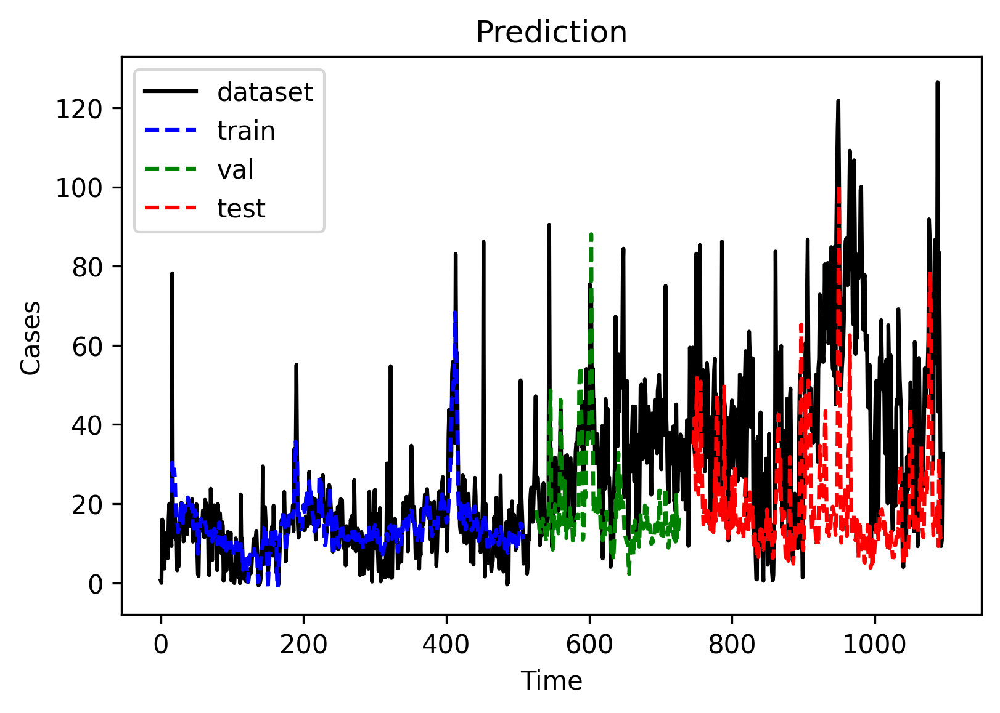
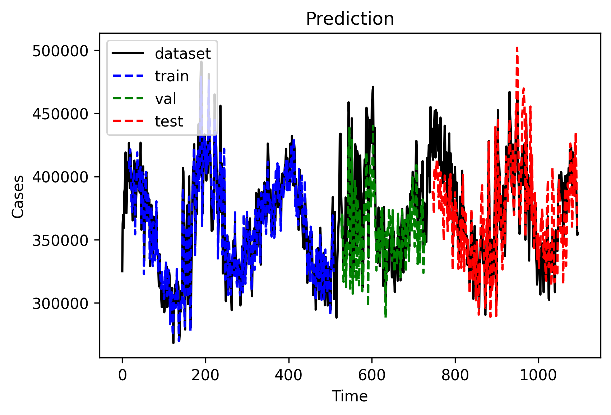

#import required libraries
import numpy as np
import pandas as pd
import matplotlib.pyplot as plt
import matplotlib as mpl
import math
import random
from datetime import datetime as dt
from sklearn.base import BaseEstimator
from sklearn.metrics import mean_squared_error
from sklearn.preprocessing import MinMaxScaler, StandardScaler
import torch
import torch.nn as nn
from torch.utils.data import TensorDataset, DataLoader
from torch.utils.data import Dataset
import torch.optim as optim
import torch.distributions as distributions
import torch.nn.functional as F
from torch.nn import Module, Parameter
import datetime
device = "cuda" if torch.cuda.is_available() else "cpu"
random.seed(20)
torch.manual_seed(20)
<torch._C.Generator at 0x7fc78ede75d0>
def read_data():
# Load CSV into dataframe and format
df = pd.read_csv('final_daily.csv')
df['date']=pd.to_datetime(df['date'])
df=df[df['date']<datetime.datetime(2023,1,1)]
variable = ['price', 'demand']
scaler = MinMaxScaler()
df[variable] = scaler.fit_transform(df[variable].values.reshape(-1, len(variable)))
VAL_PERC = 0.30
n_train = int(len(df[:-365]) * (1 - VAL_PERC))
dataframe_train = df[variable][0:n_train]
train_df = dataframe_train.values.reshape(-1, len(variable))
dataframe_val = df[variable][n_train:-365]
val_df = dataframe_val.values.reshape(-1, len(variable))
dataframe_test = df[variable][-365:]
test_df = dataframe_test.values.reshape(-1, len(variable))
dataframe_dataset = df[variable][0:df.shape[0]]
dataset= dataframe_dataset.values.reshape(-1, len(variable))
return df, train_df, val_df, test_df, dataset, scaler
def to_sequences(dataset, seq_size): # seq_size is Number of time steps to look back
#Larger sequences (look further back) may improve forecasting.
x = []
y = []
for i in range(len(dataset)-seq_size-1):
window = dataset[i:(i+seq_size), :]
x.append(window)
y.append(dataset[i+seq_size, :])
print(np.array(x).shape)
return np.array(x),np.array(y)
class EarlyStopping:
"""Early stops the training if validation loss doesn't improve after a given patience."""
def __init__(self, patience=7, verbose=False, delta=0):
"""
Args:
patience (int): How long to wait after last time validation loss improved.
Default: 7
verbose (bool): If True, prints a message for each validation loss improvement.
Default: False
delta (float): Minimum change in the monitored quantity to qualify as an improvement.
Default: 0
"""
self.patience = patience
self.verbose = verbose
self.counter = 0
self.best_score = None
self.early_stop = False
self.val_loss_min = np.Inf
self.delta = delta
def __call__(self, val_loss):
score = -val_loss
if self.best_score is None:
self.best_score = score
elif score < self.best_score + self.delta:
self.counter += 1
print(f'EarlyStopping counter: {self.counter} out of {self.patience}')
if self.counter >= self.patience:
self.early_stop = True
else:
self.best_score = score
self.counter = 0
class LSTMModel(nn.Module):
def __init__(self, input_dim, hidden_dim, layer_dim, output_dim, dropout_prob=0):
super(LSTMModel, self).__init__()
# Defining the number of layers and the nodes in each layer
self.hidden_dim = hidden_dim
self.layer_dim = layer_dim
# LSTM layers
self.lstm1 = nn.LSTM(input_dim, hidden_dim, layer_dim, batch_first=True, dropout=dropout_prob)
# Fully connected layer
self.fc = nn.Linear(hidden_dim, 256)
self.fc1 = nn.Linear(256, 128)
self.fc2 = nn.Linear(128, output_dim)
self.dropout = nn.Dropout(0.5)
self.relu = nn.LeakyReLU()
self.bn = nn.LazyBatchNorm1d()
def forward(self, x):
# Initializing hidden state for first input with zeros
h0 = torch.zeros(self.layer_dim, x.size(0), self.hidden_dim).requires_grad_()
# Initializing cell state for first input with zeros
c0 = torch.zeros(self.layer_dim, x.size(0), self.hidden_dim).requires_grad_()
# We need to detach as we are doing truncated backpropagation through time (BPTT)
# If we don't, we'll backprop all the way to the start even after going through another batch
# Forward propagation by passing in the input, hidden state, and cell state into the model
out, (hn, cn) = self.lstm1(x, (h0.detach(), c0.detach()))
# Reshaping the outputs in the shape of (batch_size, seq_length, hidden_size)
# so that it can fit into the fully connected layer
out = out[:, -1, :]
# Convert the final state to our desired output shape (batch_size, output_dim)
out = self.fc(out)
out = self.relu(out)
out = self.fc1(out)
out = self.relu(out)
out = self.fc2(out)
return out
class Optimization:
def __init__(self, model, loss_fn, optimizer):
self.model = model
self.loss_fn = loss_fn
self.optimizer = optimizer
self.train_losses = []
self.val_losses = []
def train_step(self, x, y):
# Sets model to train mode
#x = torch.squeeze(x)
#ones = torch.ones_like(x)
#masked = torch.where(x > 0, ones, 0.)
#print(masked)
self.model.train()
# Makes predictions
yhat = self.model(x)
# Computes loss
loss = self.loss_fn(y, yhat)
# Computes gradients
loss.backward()
# Updates parameters and zeroes gradients
self.optimizer.step()
self.optimizer.zero_grad()
torch.nn.utils.clip_grad_norm_(model.parameters(), 0.25)
# Returns the loss
return yhat, loss.item()
def train(self, train_loader, val_loader, batch_size=64, n_epochs=50, n_features=1):
early_stopping = EarlyStopping(patience=20)
for epoch in range(1, n_epochs + 1):
train_pred = []
val_pred = []
batch_losses = []
validation_loss = 0
training_loss = 0
for x_batch, y_batch in train_loader:
x_batch = x_batch.view([batch_size, -1, n_features]).to(device)
y_batch = y_batch.to(device)
yhat, loss = self.train_step(x_batch, y_batch)
batch_losses.append(loss)
train_pred.append(yhat.detach().numpy())
training_loss = np.mean(batch_losses)
self.train_losses.append(training_loss)
with torch.no_grad():
batch_val_losses = []
for x_val, y_val in val_loader:
x_val = x_val.view([batch_size, -1, n_features]).to(device)
y_val = y_val.to(device)
self.model.eval()
yhat = self.model(x_val)
val_loss = self.loss_fn(y_val, yhat).item()
batch_val_losses.append(val_loss)
val_pred.append(yhat.numpy())
validation_loss = np.mean(batch_val_losses)
self.val_losses.append(validation_loss)
print(f"[{epoch}/{n_epochs}] Training loss: {training_loss:.10f}\t Validation loss: {validation_loss:.10f}")
# early stopping
early_stopping(validation_loss)
if early_stopping.early_stop:
print("We are at epoch:", epoch)
break
return np.array(train_pred), np.array(val_pred)
def plot_losses(self):
plt.plot(self.train_losses, label="Training loss")
plt.plot(self.val_losses, label="Validation loss")
plt.legend()
plt.title("Losses")
plt.show()
plt.close()
def evaluate(self, test_loader, batch_size=1, n_features=1):
with torch.no_grad():
testPredict = []
testValues = []
for x_test, y_test in test_loader:
x_test = x_test.view([batch_size, -1, n_features]).to(device)
y_test = y_test.to(device)
self.model.eval()
yhat = self.model(x_test)
testPredict.append(yhat.to(device).detach().numpy())
testValues.append(y_test.to(device).detach().numpy())
return np.array(testPredict), np.array(testValues)
def plotting (dataset, trainPredict, valPredict, testPredict, fcs = None):
# shift train predictions for plotting
#we must shift the predictions so that they align on the x-axis with the original dataset.
ext = 0
if fcs is not None:
ext = fcs.shape[0]
trainPredictPlot = np.empty((dataset.shape[0] + ext, dataset.shape[1]))
trainPredictPlot[:, :] = np.nan
trainPredictPlot[seq_size-1:len(trainPredict)+seq_size-1, :] = trainPredict
# shift val predictions for plotting
valPredictPlot = np.empty((dataset.shape[0] + ext, dataset.shape[1]))
valPredictPlot[:, :] = np.nan
valPredictPlot[len(trainPredict)+(seq_size*2)+1-1:len(trainPredict)+len(valPredict)+(seq_size*2), :] = valPredict
# shift test predictions for plotting
testPredictPlot = np.empty((dataset.shape[0] + ext, dataset.shape[1]))
testPredictPlot[:, :] = np.nan
testPredictPlot[len(trainPredict)+len(valPredict)+(seq_size*3)+1:len(trainPredict)+len(valPredict)+len(testPredict)+(seq_size*3)+1, :] = testPredict
if fcs is not None:
fcPredictPlot = np.empty((dataset.shape[0] + ext, dataset.shape[1]))
fcPredictPlot[:, :] = np.nan
fcPredictPlot[len(trainPredict)+len(valPredict)+len(testPredict)+(seq_size*3)+2:len(dataset)+ext-1, :] = fcs
# plot baseline and predictions
plt.plot(dataset, color='k', label='dataset')
plt.plot(trainPredictPlot, color='b', label='train', linestyle='dashed')
plt.plot(valPredictPlot, color='g', label='val', linestyle='dashed')
plt.plot(testPredictPlot, color='r', label='test', linestyle='dashed')
if fcs is not None:
plt.plot(fcPredictPlot, color='m', label='forecasts', linestyle='dashed')
plt.legend(loc="upper left")
plt.title("Prediction")
plt.xlabel("Time")
plt.ylabel("Cases")
mpl.rcParams['figure.dpi'] = 300
plt.show()
return
df, train, val, test, dataset, scaler = read_data()
seq_size = 16
batch_size = 1
# convert dataset into input/output
trainX, trainY = to_sequences(train, seq_size)
valX, valY = to_sequences(val, seq_size)
testX, testY = to_sequences(test, seq_size)
train_features = torch.Tensor(trainX)
train_targets = torch.Tensor(trainY)
val_features = torch.Tensor(valX)
val_targets = torch.Tensor(valY)
test_features = torch.Tensor(testX)
test_targets = torch.Tensor(testY)
train = TensorDataset(train_features, train_targets)
train_loader = DataLoader(train, batch_size=batch_size, shuffle=False, drop_last=True)
val = TensorDataset(val_features, val_targets)
val_loader = DataLoader(val, batch_size=batch_size, shuffle=False, drop_last=True)
test = TensorDataset(test_features, test_targets)
test_loader = DataLoader(test, batch_size=1, shuffle=False, drop_last=False)
(494, 16, 2)
(203, 16, 2)
(348, 16, 2)
input_dim = seq_size
output_dim = trainX.shape[2]
hidden_dim = 512
layer_dim = 2
dropout = 0
n_epochs = 500
learning_rate = 1e-4
weight_decay = 0
model = LSTMModel(input_dim=input_dim, hidden_dim=hidden_dim, layer_dim=layer_dim, output_dim=output_dim, dropout_prob=dropout)
loss_fn = nn.MSELoss(reduction="mean")
optimizer = optim.Adam(model.parameters(), lr=learning_rate, weight_decay=weight_decay)
start = dt.now()
opt = Optimization(model=model, loss_fn=loss_fn, optimizer=optimizer)
train_pred, val_pred = opt.train(train_loader, val_loader, batch_size=batch_size, n_epochs=n_epochs, n_features=input_dim)
opt.plot_losses()
testPredict, testValues = opt.evaluate(test_loader, batch_size=1, n_features=input_dim)
/usr/local/lib/python3.9/dist-packages/torch/nn/modules/lazy.py:180: UserWarning: Lazy modules are a new feature under heavy development so changes to the API or functionality can happen at any moment.
warnings.warn('Lazy modules are a new feature under heavy development '
[1/500] Training loss: 0.0256592207 Validation loss: 0.0456077886
[2/500] Training loss: 0.0120431989 Validation loss: 0.0558564428
EarlyStopping counter: 1 out of 20
[3/500] Training loss: 0.0126771077 Validation loss: 0.0644737698
EarlyStopping counter: 2 out of 20
[4/500] Training loss: 0.0134021402 Validation loss: 0.0733276878
EarlyStopping counter: 3 out of 20
[5/500] Training loss: 0.0138895609 Validation loss: 0.0857621912
EarlyStopping counter: 4 out of 20
[6/500] Training loss: 0.0140058122 Validation loss: 0.0874982486
EarlyStopping counter: 5 out of 20
[7/500] Training loss: 0.0134442747 Validation loss: 0.0804046318
EarlyStopping counter: 6 out of 20
[8/500] Training loss: 0.0121871567 Validation loss: 0.0560977371
EarlyStopping counter: 7 out of 20
[9/500] Training loss: 0.0104346851 Validation loss: 0.0438954137
[10/500] Training loss: 0.0090220879 Validation loss: 0.0386528948
[11/500] Training loss: 0.0080427747 Validation loss: 0.0364049779
[12/500] Training loss: 0.0074278985 Validation loss: 0.0360949428
[13/500] Training loss: 0.0070317601 Validation loss: 0.0367782689
EarlyStopping counter: 1 out of 20
[14/500] Training loss: 0.0067694602 Validation loss: 0.0375803335
EarlyStopping counter: 2 out of 20
[15/500] Training loss: 0.0065823721 Validation loss: 0.0378393633
EarlyStopping counter: 3 out of 20
[16/500] Training loss: 0.0064461204 Validation loss: 0.0377693022
EarlyStopping counter: 4 out of 20
[17/500] Training loss: 0.0063258284 Validation loss: 0.0374453800
EarlyStopping counter: 5 out of 20
[18/500] Training loss: 0.0062223526 Validation loss: 0.0368981864
EarlyStopping counter: 6 out of 20
[19/500] Training loss: 0.0061362495 Validation loss: 0.0362940401
EarlyStopping counter: 7 out of 20
[20/500] Training loss: 0.0060629543 Validation loss: 0.0358383702
[21/500] Training loss: 0.0059992101 Validation loss: 0.0354959201
[22/500] Training loss: 0.0059450823 Validation loss: 0.0350178206
[23/500] Training loss: 0.0058978836 Validation loss: 0.0347128261
[24/500] Training loss: 0.0058556860 Validation loss: 0.0343923801
[25/500] Training loss: 0.0058065706 Validation loss: 0.0343919367
[26/500] Training loss: 0.0057652614 Validation loss: 0.0342653014
[27/500] Training loss: 0.0057261189 Validation loss: 0.0344343205
EarlyStopping counter: 1 out of 20
[28/500] Training loss: 0.0056884995 Validation loss: 0.0349232848
EarlyStopping counter: 2 out of 20
[29/500] Training loss: 0.0056459755 Validation loss: 0.0344769559
EarlyStopping counter: 3 out of 20
[30/500] Training loss: 0.0056035583 Validation loss: 0.0338153589
[31/500] Training loss: 0.0055538850 Validation loss: 0.0333884757
[32/500] Training loss: 0.0054964396 Validation loss: 0.0324174721
[33/500] Training loss: 0.0054385384 Validation loss: 0.0310184760
[34/500] Training loss: 0.0053662197 Validation loss: 0.0300531047
[35/500] Training loss: 0.0052848768 Validation loss: 0.0286897613
[36/500] Training loss: 0.0052133512 Validation loss: 0.0275433225
[37/500] Training loss: 0.0051406803 Validation loss: 0.0261252154
[38/500] Training loss: 0.0050591526 Validation loss: 0.0252558459
[39/500] Training loss: 0.0050093610 Validation loss: 0.0247078205
[40/500] Training loss: 0.0049582562 Validation loss: 0.0235415987
[41/500] Training loss: 0.0049128269 Validation loss: 0.0225550315
[42/500] Training loss: 0.0048595352 Validation loss: 0.0221592617
[43/500] Training loss: 0.0048175570 Validation loss: 0.0212354132
[44/500] Training loss: 0.0047785497 Validation loss: 0.0209490032
[45/500] Training loss: 0.0047359537 Validation loss: 0.0205122840
[46/500] Training loss: 0.0047022628 Validation loss: 0.0203981376
[47/500] Training loss: 0.0046599739 Validation loss: 0.0201772302
[48/500] Training loss: 0.0046215808 Validation loss: 0.0199493912
[49/500] Training loss: 0.0045762043 Validation loss: 0.0202814169
EarlyStopping counter: 1 out of 20
[50/500] Training loss: 0.0045446160 Validation loss: 0.0204946205
EarlyStopping counter: 2 out of 20
[51/500] Training loss: 0.0044929713 Validation loss: 0.0203492447
EarlyStopping counter: 3 out of 20
[52/500] Training loss: 0.0044635163 Validation loss: 0.0205278895
EarlyStopping counter: 4 out of 20
[53/500] Training loss: 0.0044234113 Validation loss: 0.0206817506
EarlyStopping counter: 5 out of 20
[54/500] Training loss: 0.0043735096 Validation loss: 0.0209367601
EarlyStopping counter: 6 out of 20
[55/500] Training loss: 0.0043375003 Validation loss: 0.0210280162
EarlyStopping counter: 7 out of 20
[56/500] Training loss: 0.0042869369 Validation loss: 0.0214456371
EarlyStopping counter: 8 out of 20
[57/500] Training loss: 0.0042525324 Validation loss: 0.0221327089
EarlyStopping counter: 9 out of 20
[58/500] Training loss: 0.0042176739 Validation loss: 0.0225904391
EarlyStopping counter: 10 out of 20
[59/500] Training loss: 0.0041674866 Validation loss: 0.0229433053
EarlyStopping counter: 11 out of 20
[60/500] Training loss: 0.0041537883 Validation loss: 0.0238253109
EarlyStopping counter: 12 out of 20
[61/500] Training loss: 0.0041249539 Validation loss: 0.0234445685
EarlyStopping counter: 13 out of 20
[62/500] Training loss: 0.0040633893 Validation loss: 0.0230081604
EarlyStopping counter: 14 out of 20
[63/500] Training loss: 0.0040430692 Validation loss: 0.0240248988
EarlyStopping counter: 15 out of 20
[64/500] Training loss: 0.0039606895 Validation loss: 0.0239726221
EarlyStopping counter: 16 out of 20
[65/500] Training loss: 0.0039243840 Validation loss: 0.0237495199
EarlyStopping counter: 17 out of 20
[66/500] Training loss: 0.0038394273 Validation loss: 0.0244681622
EarlyStopping counter: 18 out of 20
[67/500] Training loss: 0.0038070121 Validation loss: 0.0242335836
EarlyStopping counter: 19 out of 20
[68/500] Training loss: 0.0037500423 Validation loss: 0.0234940264
EarlyStopping counter: 20 out of 20
We are at epoch: 68
df_train = scaler.inverse_transform(train_pred.reshape(-1, 2))
df_val = scaler.inverse_transform(val_pred.reshape(-1, 2))
df_test = scaler.inverse_transform(testPredict.reshape(-1, 2))
dataset = scaler.inverse_transform(dataset)
testPredict.shape
(348, 1, 2)
plotting (dataset[:, 0].reshape(-1, 1), df_train[:, 0].reshape(-1, 1), df_val[:, 0].reshape(-1, 1), df_test[:, 0].reshape(-1, 1)) #plotting without inverse_transform

np.square(df_test[:, 0] - scaler.inverse_transform(testY)[:, 0]).mean()
1266.828661135002
np.abs(df_test[:, 0] - scaler.inverse_transform(testY)[:, 0]).mean()
28.703972313787748
def mape(x, y):
error = abs(x-y)/abs(x)
error[error > 1] = 1
return np.mean(error)
mape(df_test[:, 0], scaler.inverse_transform(testY)[:, 0])
0.7948066038825093
plotting (dataset[:, 1].reshape(-1, 1), df_train[:, 1].reshape(-1, 1), df_val[:, 1].reshape(-1, 1), df_test[:, 1].reshape(-1, 1)) #plotting without inverse_transform

np.square(df_test[:, 1] - scaler.inverse_transform(testY)[:, 1]).mean()
845069403.3450913
np.abs(df_test[:, 1] - scaler.inverse_transform(testY)[:, 1]).mean()
23636.191630747126
def mape(x, y):
error = abs(x-y)/abs(x)
error[error > 1] = 1
return np.mean(error)
mape(df_test[:, 1], scaler.inverse_transform(testY)[:, 1])
0.06338243039531136